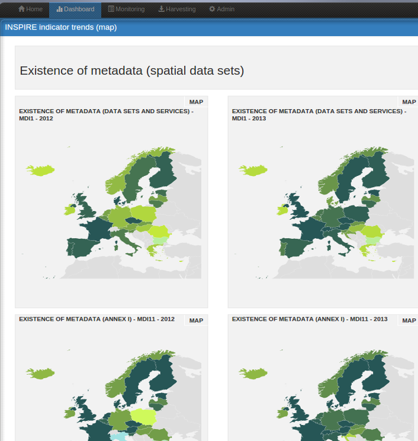

titellus demo are updated continuously and should be up and running most of the time ;)


INSPIRE dashboard
The INSPIRE dashboard is based on daobs project and harvest all EU Member States discovery services and provides interactive dashboards, reporting and analysis tools.

INSPIRE Themes icon set
This is usefull when you need to display INSPIRE themes in a website.
Source code here.